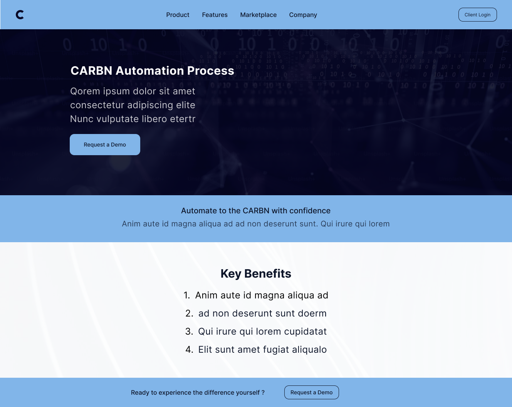
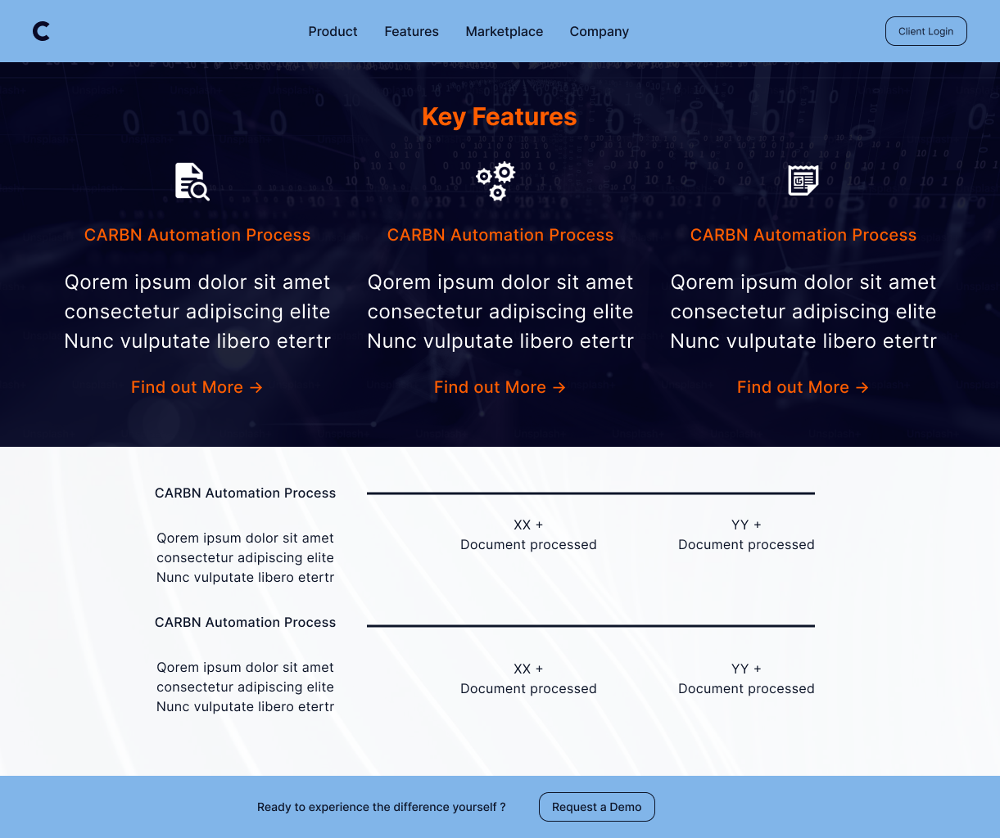
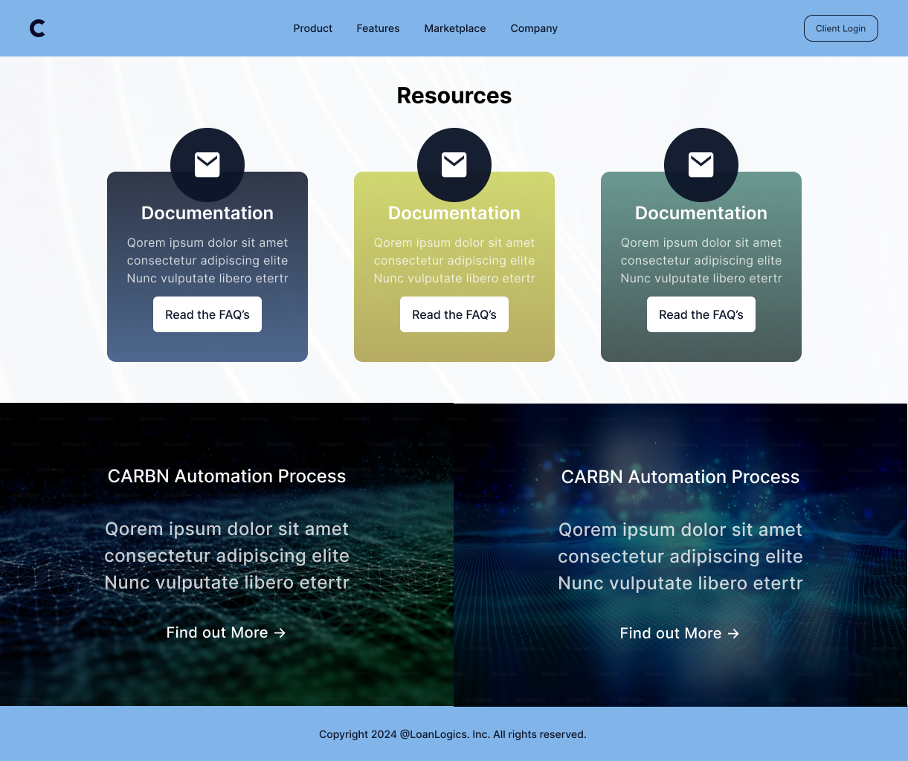

LoanLogics – Enterprise Marketing System Redesign
Redesigning a scalable enterprise marketing system to improve clarity, brand alignment, and conversion performance across 20+ pages.
Overview
LoanLogics aimed to revamp its marketing website to align with the launch of LoanBeam®, an income calculation automation tool for lenders.
The existing experience lacked consistency, clarity, and a strong conversion path. My responsibility was to create a scalable UI system that improved messaging clarity while maintaining enterprise trust and compliance standards.
Business Goals
- Increase demo requests
- Improve engagement and page clarity
- Align LoanLogics and LoanBeam brand identity
- Create a scalable and reusable page structure
- Improve lead-generation flow
The Problem
The marketing pages were functional but inconsistent. Content density was high, CTAs lacked visibility, and visual hierarchy did not clearly communicate value.
- No unified layout system
- Benefits buried in large text blocks
- Request Demo CTA poorly placed
- Pages felt disconnected from brand positioning
Research & Discovery
Stakeholder Alignment
Collaborated with product, marketing leadership, and engineering to ensure the design aligned with enterprise expectations.
Competitor Analysis
- Clear hero messaging with strong CTA
- 3–4 benefit grid structures
- Minimalist layout with strong whitespace
- Data-driven trust indicators
Content Audit
Reorganized content into scannable blocks and defined reusable UI modules for scalability.

Information Architecture
Designed a modular 7-section page framework to maintain clarity and scalability.
- Hero with clear value proposition
- Supporting context section
- Benefits grid
- Feature highlight blocks
- Strategic CTA placement
- Reusable content modules
Live UI Snapshots (Recreated for Portfolio)
Note: These screens are recreated versions of the original designs I worked on. The current live website has since been redesigned.



CTA Exploration & Stakeholder Validation
To improve conversion visibility, I explored multiple CTA visual directions. Three variations were presented to leadership. Version 2 was selected by the VP for implementation.

Concept 1

Concept 2 (Selected)

Concept 3
Design Process


Validation
Conducted informal validation sessions with marketing, sales, and SMEs.
- Improved CTA visibility
- Refined header spacing
- Enhanced banner imagery engagement
Outcomes
20+
Marketing pages standardized
30–40%
Faster page creation
This redesign established a scalable design system that reduced content duplication, accelerated marketing deployment, and strengthened enterprise trust signals.
My Contributions
- Designed complete information hierarchy
- Created wireframes to high-fidelity UI
- Built reusable grid & spacing system
- Collaborated during design-to-code handoff
- Ensured responsive consistency across breakpoints